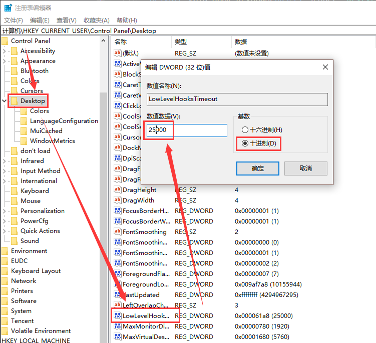

<!DOCTYPE html>
<html>
<head><meta name="generator" content="Hexo 3.9.0">
    <meta charset="utf-8">

    

    
    <title>C#全局键盘监听（Hook）的使用 | 无聊小博</title>
    
    <meta name="viewport" content="width=device-width, initial-scale=1, maximum-scale=1">
    
        <meta name="keywords" content="c#,hook,键盘,监听">
    
    <meta name="description" content="文章更新 20151210-初次成文 20170518-更新内容  为什么需要全局键盘监听？在某些情况下应用程序需要实现快捷键执行特定功能，例如大家熟知的QQ截图功能Ctrl+Alt+A快捷键，只要QQ程序在运行（无论是拥有焦点还是处于后台运行状态），都可以按下快捷键使用此功能… 这个时候在程序中添加键盘监听肯定不能满足需求了，当用户焦点不在App上时（如最小化，或者用户在处理其它事物等等）键盘监">
<meta name="keywords" content="c#,hook,键盘,监听">
<meta property="og:type" content="article">
<meta property="og:title" content="C#全局键盘监听（Hook）的使用">
<meta property="og:url" content="http://www.wuliaole.com/post/the_usage_of_hookers_in_key_code_capture_in_c_sharp/index.html">
<meta property="og:site_name" content="无聊小博">
<meta property="og:description" content="文章更新 20151210-初次成文 20170518-更新内容  为什么需要全局键盘监听？在某些情况下应用程序需要实现快捷键执行特定功能，例如大家熟知的QQ截图功能Ctrl+Alt+A快捷键，只要QQ程序在运行（无论是拥有焦点还是处于后台运行状态），都可以按下快捷键使用此功能… 这个时候在程序中添加键盘监听肯定不能满足需求了，当用户焦点不在App上时（如最小化，或者用户在处理其它事物等等）键盘监">
<meta property="og:locale" content="zh-Hans">
<meta property="og:image" content="http://www.wuliaole.com/post/the_usage_of_hookers_in_key_code_capture_in_c_sharp/lowlevelhookinregedit.png">
<meta property="og:updated_time" content="2018-10-11T15:31:02.000Z">
<meta name="twitter:card" content="summary">
<meta name="twitter:title" content="C#全局键盘监听（Hook）的使用">
<meta name="twitter:description" content="文章更新 20151210-初次成文 20170518-更新内容  为什么需要全局键盘监听？在某些情况下应用程序需要实现快捷键执行特定功能，例如大家熟知的QQ截图功能Ctrl+Alt+A快捷键，只要QQ程序在运行（无论是拥有焦点还是处于后台运行状态），都可以按下快捷键使用此功能… 这个时候在程序中添加键盘监听肯定不能满足需求了，当用户焦点不在App上时（如最小化，或者用户在处理其它事物等等）键盘监">
<meta name="twitter:image" content="http://www.wuliaole.com/post/the_usage_of_hookers_in_key_code_capture_in_c_sharp/lowlevelhookinregedit.png">
    

    
        <link rel="alternate" href="/" title="无聊小博" type="application/atom+xml">
    

    

    <link rel="stylesheet" href="/libs/font-awesome/css/font-awesome.min.css">
    <link rel="stylesheet" href="/libs/titillium-web/styles.css">
    <link rel="stylesheet" href="/libs/source-code-pro/styles.css">

    <link rel="stylesheet" href="/css/style.css">

    <script src="/libs/jquery/3.3.1/jquery.min.js"></script>
    
    
        <link rel="stylesheet" href="/libs/lightgallery/css/lightgallery.min.css">
    
    
        <link rel="stylesheet" href="/libs/justified-gallery/justifiedGallery.min.css">
    
    
        <script type="text/javascript">
(function(i,s,o,g,r,a,m) {i['GoogleAnalyticsObject']=r;i[r]=i[r]||function() {
(i[r].q=i[r].q||[]).push(arguments)},i[r].l=1*new Date();a=s.createElement(o),
m=s.getElementsByTagName(o)[0];a.async=1;a.src=g;m.parentNode.insertBefore(a,m)
})(window,document,'script','//www.google-analytics.com/analytics.js','ga');

ga('create', 'UA-144170558-1', 'auto');
ga('send', 'pageview');

</script>

    
    
        <script>
var _hmt = _hmt || [];
(function() {
  var hm = document.createElement("script");
  hm.src = "//hm.baidu.com/hm.js?0b9af06e21a88c60dc3deb5b699a3e63";
  var s = document.getElementsByTagName("script")[0];
  s.parentNode.insertBefore(hm, s);
})();
</script>

    


</head>
</html>
<body>
    <div id="wrap">
        <header id="header">
    <div id="header-outer" class="outer">
        <div class="container">
            <div class="container-inner">
                <div id="header-title">
                    <h1 class="logo-wrap">
                        <a href="/" class="logo"></a>
                    </h1>
                    
                        <h2 class="subtitle-wrap">
                            <p class="subtitle">Keep sharp</p>
                        </h2>
                    
                </div>
                <div id="header-inner" class="nav-container">
                    <a id="main-nav-toggle" class="nav-icon fa fa-bars"></a>
                    <div class="nav-container-inner">
                        <ul id="main-nav">
                            
                                <li class="main-nav-list-item" >
                                    <a class="main-nav-list-link" href="/">Inici</a>
                                </li>
                            
                                        <ul class="main-nav-list"><li class="main-nav-list-item"><a class="main-nav-list-link" href="/categories/CentOS/">CentOS</a></li><li class="main-nav-list-item"><a class="main-nav-list-link" href="/categories/Hexo/">Hexo</a><ul class="main-nav-list-child"><li class="main-nav-list-item"><a class="main-nav-list-link" href="/categories/Hexo/基础/">基础</a></li></ul></li><li class="main-nav-list-item"><a class="main-nav-list-link" href="/categories/Linux/">Linux</a></li><li class="main-nav-list-item"><a class="main-nav-list-link" href="/categories/MacOS/">MacOS</a></li><li class="main-nav-list-item"><a class="main-nav-list-link" href="/categories/折腾/">折腾</a></li><li class="main-nav-list-item"><a class="main-nav-list-link" href="/categories/效率/">效率</a></li><li class="main-nav-list-item"><a class="main-nav-list-link" href="/categories/日常使用/">日常使用</a></li><li class="main-nav-list-item"><a class="main-nav-list-link" href="/categories/raspberry/">树莓派</a><ul class="main-nav-list-child"><li class="main-nav-list-item"><a class="main-nav-list-link" href="/categories/raspberry/入门/">入门</a></li></ul></li><li class="main-nav-list-item"><a class="main-nav-list-link" href="/categories/编程/">编程</a></li></ul>
                                    
                                <li class="main-nav-list-item" >
                                    <a class="main-nav-list-link" href="/about/index.html">Quant a</a>
                                </li>
                            
                        </ul>
                        <nav id="sub-nav">
                            <div id="search-form-wrap">

    <form class="search-form">
        <input type="text" class="ins-search-input search-form-input" placeholder="Cercar" />
        <button type="submit" class="search-form-submit"></button>
    </form>
    <div class="ins-search">
    <div class="ins-search-mask"></div>
    <div class="ins-search-container">
        <div class="ins-input-wrapper">
            <input type="text" class="ins-search-input" placeholder="Type something..." />
            <span class="ins-close ins-selectable"><i class="fa fa-times-circle"></i></span>
        </div>
        <div class="ins-section-wrapper">
            <div class="ins-section-container"></div>
        </div>
    </div>
</div>
<script>
(function (window) {
    var INSIGHT_CONFIG = {
        TRANSLATION: {
            POSTS: 'Posts',
            PAGES: 'Pages',
            CATEGORIES: 'categories',
            TAGS: 'etiquetes',
            UNTITLED: '(Untitled)',
        },
        ROOT_URL: '/',
        CONTENT_URL: '/content.json',
    };
    window.INSIGHT_CONFIG = INSIGHT_CONFIG;
})(window);
</script>
<script src="/js/insight.js"></script>

</div>
                        </nav>
                    </div>
                </div>
            </div>
        </div>
    </div>
</header>
        <div class="container">
            <div class="main-body container-inner">
                <div class="main-body-inner">
                    <section id="main">
                        <div class="main-body-header">
    <h1 class="header">
    
    <a class="page-title-link" href="/categories/编程/">编程</a>
    </h1>
</div>

                        <div class="main-body-content">
                            <article id="post-20151210-C#全局键盘监听（Hook）的使用" class="article article-single article-type-post" itemscope itemprop="blogPost">
    <div class="article-inner">
        
            <header class="article-header">
                
    
        <h1 class="article-title" itemprop="name">
        C#全局键盘监听（Hook）的使用
        </h1>
    

            </header>
        
        
            <div class="article-meta">
                
    <div class="article-date">
        <a href="/post/the_usage_of_hookers_in_key_code_capture_in_c_sharp/" class="article-date">
            <time datetime="2015-12-10T06:08:45.000Z" itemprop="datePublished">2015-12-10</time>
        </a>
    </div>

		

                
    <div class="article-tag">
        <i class="fa fa-tag"></i>
        <a class="tag-link" href="/tags/c/">c#</a>, <a class="tag-link" href="/tags/hook/">hook</a>, <a class="tag-link" href="/tags/监听/">监听</a>, <a class="tag-link" href="/tags/键盘/">键盘</a>
    </div>

            </div>
        
        
        <div class="article-entry" itemprop="articleBody">
            <h2 id="文章更新"><a href="#文章更新" class="headerlink" title="文章更新"></a>文章更新</h2><ol>
<li>20151210-初次成文</li>
<li>20170518-更新内容</li>
</ol>
<h2 id="为什么需要全局键盘监听？"><a href="#为什么需要全局键盘监听？" class="headerlink" title="为什么需要全局键盘监听？"></a>为什么需要全局键盘监听？</h2><p>在某些情况下应用程序需要实现快捷键执行特定功能，例如大家熟知的QQ截图功能Ctrl+Alt+A快捷键，只要QQ程序在运行（无论是拥有焦点还是处于后台运行状态），都可以按下快捷键使用此功能…</p>
<p>这个时候在程序中添加键盘监听肯定不能满足需求了，当用户焦点不在App上时（如最小化，或者用户在处理其它事物等等）键盘监听就失效了</p>
<h2 id="怎样才能实现全局键盘监听？"><a href="#怎样才能实现全局键盘监听？" class="headerlink" title="怎样才能实现全局键盘监听？"></a>怎样才能实现全局键盘监听？</h2><p>这里需要用到Windows API，源码如下：（可以作为一个工具类[KeyboardHook.cs]收藏起来）</p>
<figure class="highlight csharp"><table><tr><td class="gutter"><pre><span class="line">1</span><br><span class="line">2</span><br><span class="line">3</span><br><span class="line">4</span><br><span class="line">5</span><br><span class="line">6</span><br><span class="line">7</span><br><span class="line">8</span><br><span class="line">9</span><br><span class="line">10</span><br><span class="line">11</span><br><span class="line">12</span><br><span class="line">13</span><br><span class="line">14</span><br><span class="line">15</span><br><span class="line">16</span><br><span class="line">17</span><br><span class="line">18</span><br><span class="line">19</span><br><span class="line">20</span><br><span class="line">21</span><br><span class="line">22</span><br><span class="line">23</span><br><span class="line">24</span><br><span class="line">25</span><br><span class="line">26</span><br><span class="line">27</span><br><span class="line">28</span><br><span class="line">29</span><br><span class="line">30</span><br><span class="line">31</span><br><span class="line">32</span><br><span class="line">33</span><br><span class="line">34</span><br><span class="line">35</span><br><span class="line">36</span><br><span class="line">37</span><br><span class="line">38</span><br><span class="line">39</span><br><span class="line">40</span><br><span class="line">41</span><br><span class="line">42</span><br><span class="line">43</span><br><span class="line">44</span><br><span class="line">45</span><br><span class="line">46</span><br><span class="line">47</span><br><span class="line">48</span><br><span class="line">49</span><br><span class="line">50</span><br><span class="line">51</span><br><span class="line">52</span><br><span class="line">53</span><br><span class="line">54</span><br><span class="line">55</span><br><span class="line">56</span><br><span class="line">57</span><br><span class="line">58</span><br><span class="line">59</span><br><span class="line">60</span><br><span class="line">61</span><br><span class="line">62</span><br><span class="line">63</span><br><span class="line">64</span><br><span class="line">65</span><br><span class="line">66</span><br><span class="line">67</span><br><span class="line">68</span><br><span class="line">69</span><br><span class="line">70</span><br><span class="line">71</span><br><span class="line">72</span><br><span class="line">73</span><br><span class="line">74</span><br><span class="line">75</span><br><span class="line">76</span><br><span class="line">77</span><br><span class="line">78</span><br><span class="line">79</span><br><span class="line">80</span><br><span class="line">81</span><br><span class="line">82</span><br><span class="line">83</span><br><span class="line">84</span><br><span class="line">85</span><br><span class="line">86</span><br><span class="line">87</span><br><span class="line">88</span><br><span class="line">89</span><br><span class="line">90</span><br><span class="line">91</span><br><span class="line">92</span><br><span class="line">93</span><br><span class="line">94</span><br><span class="line">95</span><br><span class="line">96</span><br><span class="line">97</span><br><span class="line">98</span><br><span class="line">99</span><br><span class="line">100</span><br><span class="line">101</span><br><span class="line">102</span><br><span class="line">103</span><br><span class="line">104</span><br><span class="line">105</span><br><span class="line">106</span><br><span class="line">107</span><br><span class="line">108</span><br><span class="line">109</span><br><span class="line">110</span><br><span class="line">111</span><br><span class="line">112</span><br><span class="line">113</span><br><span class="line">114</span><br><span class="line">115</span><br><span class="line">116</span><br><span class="line">117</span><br><span class="line">118</span><br><span class="line">119</span><br><span class="line">120</span><br><span class="line">121</span><br><span class="line">122</span><br><span class="line">123</span><br><span class="line">124</span><br><span class="line">125</span><br><span class="line">126</span><br><span class="line">127</span><br><span class="line">128</span><br><span class="line">129</span><br><span class="line">130</span><br><span class="line">131</span><br><span class="line">132</span><br><span class="line">133</span><br><span class="line">134</span><br><span class="line">135</span><br><span class="line">136</span><br><span class="line">137</span><br><span class="line">138</span><br><span class="line">139</span><br><span class="line">140</span><br><span class="line">141</span><br><span class="line">142</span><br><span class="line">143</span><br><span class="line">144</span><br><span class="line">145</span><br><span class="line">146</span><br><span class="line">147</span><br><span class="line">148</span><br><span class="line">149</span><br><span class="line">150</span><br><span class="line">151</span><br><span class="line">152</span><br><span class="line">153</span><br><span class="line">154</span><br><span class="line">155</span><br><span class="line">156</span><br><span class="line">157</span><br><span class="line">158</span><br><span class="line">159</span><br><span class="line">160</span><br><span class="line">161</span><br><span class="line">162</span><br><span class="line">163</span><br><span class="line">164</span><br></pre></td><td class="code"><pre><span class="line"><span class="keyword">using</span> System;</span><br><span class="line"><span class="keyword">using</span> System.Collections.Generic;</span><br><span class="line"><span class="keyword">using</span> System.Text;</span><br><span class="line"><span class="keyword">using</span> System.Runtime.InteropServices;</span><br><span class="line"><span class="keyword">using</span> System.Windows.Forms;</span><br><span class="line"><span class="keyword">using</span> System.Reflection;</span><br><span class="line"></span><br><span class="line"><span class="keyword">namespace</span> <span class="title">clickmonitor</span></span><br><span class="line">&#123;</span><br><span class="line">    <span class="comment"><span class="doctag">///</span> <span class="doctag">&lt;summary&gt;</span></span></span><br><span class="line">    <span class="comment"><span class="doctag">///</span> 键盘钩子</span></span><br><span class="line">    <span class="comment"><span class="doctag">///</span> [以下代码来自某网友，并非本人原创]</span></span><br><span class="line">    <span class="comment"><span class="doctag">///</span> <span class="doctag">&lt;summary&gt;</span></span></span><br><span class="line">    <span class="keyword">class</span> <span class="title">KeyboardHook</span></span><br><span class="line">    &#123;</span><br><span class="line">        <span class="keyword">public</span> <span class="keyword">event</span> KeyEventHandler KeyDownEvent;</span><br><span class="line">        <span class="keyword">public</span> <span class="keyword">event</span> KeyPressEventHandler KeyPressEvent;</span><br><span class="line">        <span class="keyword">public</span> <span class="keyword">event</span> KeyEventHandler KeyUpEvent;</span><br><span class="line"></span><br><span class="line">        <span class="function"><span class="keyword">public</span> <span class="keyword">delegate</span> <span class="keyword">int</span> <span class="title">HookProc</span>(<span class="params"><span class="keyword">int</span> nCode, Int32 wParam, IntPtr lParam</span>)</span>;</span><br><span class="line">        <span class="keyword">static</span> <span class="keyword">int</span> hKeyboardHook = <span class="number">0</span>; <span class="comment">//声明键盘钩子处理的初始值</span></span><br><span class="line">                                      <span class="comment">//值在Microsoft SDK的Winuser.h里查询</span></span><br><span class="line">                                      <span class="comment">//转载自http://www.bianceng.cn/Programming/csharp/201410/45484.htm</span></span><br><span class="line">        <span class="keyword">public</span> <span class="keyword">const</span> <span class="keyword">int</span> WH_KEYBOARD_LL = <span class="number">13</span>;   <span class="comment">//线程键盘钩子监听鼠标消息设为2，全局键盘监听鼠标消息设为13</span></span><br><span class="line">        HookProc KeyboardHookProcedure; <span class="comment">//声明KeyboardHookProcedure作为HookProc类型</span></span><br><span class="line">        <span class="comment">//键盘结构</span></span><br><span class="line">        [<span class="meta">StructLayout(LayoutKind.Sequential)</span>]</span><br><span class="line">        <span class="keyword">public</span> <span class="keyword">class</span> <span class="title">KeyboardHookStruct</span></span><br><span class="line">        &#123;</span><br><span class="line">            <span class="keyword">public</span> <span class="keyword">int</span> vkCode;  <span class="comment">//定一个虚拟键码。该代码必须有一个价值的范围1至254</span></span><br><span class="line">            <span class="keyword">public</span> <span class="keyword">int</span> scanCode; <span class="comment">// 指定的硬件扫描码的关键</span></span><br><span class="line">            <span class="keyword">public</span> <span class="keyword">int</span> flags;  <span class="comment">// 键标志</span></span><br><span class="line">            <span class="keyword">public</span> <span class="keyword">int</span> time; <span class="comment">// 指定的时间戳记的这个讯息</span></span><br><span class="line">            <span class="keyword">public</span> <span class="keyword">int</span> dwExtraInfo; <span class="comment">// 指定额外信息相关的信息</span></span><br><span class="line">        &#125;</span><br><span class="line">        <span class="comment">//使用此功能，安装了一个钩子</span></span><br><span class="line">        [<span class="meta">DllImport(<span class="meta-string">"user32.dll"</span>, CharSet = CharSet.Auto, CallingConvention = CallingConvention.StdCall)</span>]</span><br><span class="line">        <span class="function"><span class="keyword">public</span> <span class="keyword">static</span> <span class="keyword">extern</span> <span class="keyword">int</span> <span class="title">SetWindowsHookEx</span>(<span class="params"><span class="keyword">int</span> idHook, HookProc lpfn, IntPtr hInstance, <span class="keyword">int</span> threadId</span>)</span>;</span><br><span class="line"></span><br><span class="line">        <span class="comment">//调用此函数卸载钩子</span></span><br><span class="line">        [<span class="meta">DllImport(<span class="meta-string">"user32.dll"</span>, CharSet = CharSet.Auto, CallingConvention = CallingConvention.StdCall)</span>]</span><br><span class="line">        <span class="function"><span class="keyword">public</span> <span class="keyword">static</span> <span class="keyword">extern</span> <span class="keyword">bool</span> <span class="title">UnhookWindowsHookEx</span>(<span class="params"><span class="keyword">int</span> idHook</span>)</span>;</span><br><span class="line"></span><br><span class="line">        <span class="comment">//使用此功能，通过信息钩子继续下一个钩子</span></span><br><span class="line">        [<span class="meta">DllImport(<span class="meta-string">"user32.dll"</span>, CharSet = CharSet.Auto, CallingConvention = CallingConvention.StdCall)</span>]</span><br><span class="line">        <span class="function"><span class="keyword">public</span> <span class="keyword">static</span> <span class="keyword">extern</span> <span class="keyword">int</span> <span class="title">CallNextHookEx</span>(<span class="params"><span class="keyword">int</span> idHook, <span class="keyword">int</span> nCode, Int32 wParam, IntPtr lParam</span>)</span>;</span><br><span class="line"></span><br><span class="line">        <span class="comment">// 取得当前线程编号（线程钩子需要用到）</span></span><br><span class="line">        [<span class="meta">DllImport(<span class="meta-string">"kernel32.dll"</span>)</span>]</span><br><span class="line">        <span class="function"><span class="keyword">static</span> <span class="keyword">extern</span> <span class="keyword">int</span> <span class="title">GetCurrentThreadId</span>(<span class="params"></span>)</span>;</span><br><span class="line"></span><br><span class="line">        <span class="comment">//使用WINDOWS API函数代替获取当前实例的函数,防止钩子失效</span></span><br><span class="line">        [<span class="meta">DllImport(<span class="meta-string">"kernel32.dll"</span>)</span>]</span><br><span class="line">        <span class="function"><span class="keyword">public</span> <span class="keyword">static</span> <span class="keyword">extern</span> IntPtr <span class="title">GetModuleHandle</span>(<span class="params"><span class="keyword">string</span> name</span>)</span>;</span><br><span class="line"></span><br><span class="line">        <span class="function"><span class="keyword">public</span> <span class="keyword">void</span> <span class="title">Start</span>(<span class="params"></span>)</span></span><br><span class="line"><span class="function"></span>        &#123;</span><br><span class="line">            <span class="comment">// 安装键盘钩子</span></span><br><span class="line">            <span class="keyword">if</span> (hKeyboardHook == <span class="number">0</span>)</span><br><span class="line">            &#123;</span><br><span class="line">                KeyboardHookProcedure = <span class="keyword">new</span> HookProc(KeyboardHookProc);</span><br><span class="line">                hKeyboardHook = SetWindowsHookEx(WH_KEYBOARD_LL, KeyboardHookProcedure, GetModuleHandle(System.Diagnostics.Process.GetCurrentProcess().MainModule.ModuleName), <span class="number">0</span>);</span><br><span class="line">                <span class="comment">//hKeyboardHook = SetWindowsHookEx(WH_KEYBOARD_LL, KeyboardHookProcedure, Marshal.GetHINSTANCE(Assembly.GetExecutingAssembly().GetModules()[0]), 0);</span></span><br><span class="line">                <span class="comment">//************************************</span></span><br><span class="line">                <span class="comment">//键盘线程钩子</span></span><br><span class="line">                <span class="comment">//SetWindowsHookEx( 2,KeyboardHookProcedure, IntPtr.Zero, GetCurrentThreadId());//指定要监听的线程idGetCurrentThreadId(),</span></span><br><span class="line">                <span class="comment">//键盘全局钩子,需要引用空间(using System.Reflection;)</span></span><br><span class="line">                <span class="comment">//SetWindowsHookEx( 13,MouseHookProcedure,Marshal.GetHINSTANCE(Assembly.GetExecutingAssembly().GetModules()[0]),0);</span></span><br><span class="line">                <span class="comment">//</span></span><br><span class="line">                <span class="comment">//关于SetWindowsHookEx (int idHook, HookProc lpfn, IntPtr hInstance, int threadId)函数将钩子加入到钩子链表中，说明一下四个参数：</span></span><br><span class="line">                <span class="comment">//idHook 钩子类型，即确定钩子监听何种消息，上面的代码中设为2，即监听键盘消息并且是线程钩子，如果是全局钩子监听键盘消息应设为13，</span></span><br><span class="line">                <span class="comment">//线程钩子监听鼠标消息设为7，全局钩子监听鼠标消息设为14。lpfn 钩子子程的地址指针。如果dwThreadId参数为0 或是一个由别的进程创建的</span></span><br><span class="line">                <span class="comment">//线程的标识，lpfn必须指向DLL中的钩子子程。 除此以外，lpfn可以指向当前进程的一段钩子子程代码。钩子函数的入口地址，当钩子钩到任何</span></span><br><span class="line">                <span class="comment">//消息后便调用这个函数。hInstance应用程序实例的句柄。标识包含lpfn所指的子程的DLL。如果threadId 标识当前进程创建的一个线程，而且子</span></span><br><span class="line">                <span class="comment">//程代码位于当前进程，hInstance必须为NULL。可以很简单的设定其为本应用程序的实例句柄。threaded 与安装的钩子子程相关联的线程的标识符</span></span><br><span class="line">                <span class="comment">//如果为0，钩子子程与所有的线程关联，即为全局钩子</span></span><br><span class="line">                <span class="comment">//************************************</span></span><br><span class="line">                <span class="comment">//如果SetWindowsHookEx失败</span></span><br><span class="line">                <span class="keyword">if</span> (hKeyboardHook == <span class="number">0</span>)</span><br><span class="line">                &#123;</span><br><span class="line">                    Stop();</span><br><span class="line">                    <span class="keyword">throw</span> <span class="keyword">new</span> Exception(<span class="string">"安装键盘钩子失败"</span>);</span><br><span class="line">                &#125;</span><br><span class="line">            &#125;</span><br><span class="line">        &#125;</span><br><span class="line">        <span class="function"><span class="keyword">public</span> <span class="keyword">void</span> <span class="title">Stop</span>(<span class="params"></span>)</span></span><br><span class="line"><span class="function"></span>        &#123;</span><br><span class="line">            <span class="keyword">bool</span> retKeyboard = <span class="literal">true</span>;</span><br><span class="line"></span><br><span class="line">            <span class="keyword">if</span> (hKeyboardHook != <span class="number">0</span>)</span><br><span class="line">            &#123;</span><br><span class="line">                retKeyboard = UnhookWindowsHookEx(hKeyboardHook);</span><br><span class="line">                hKeyboardHook = <span class="number">0</span>;</span><br><span class="line">            &#125;</span><br><span class="line"></span><br><span class="line">            <span class="keyword">if</span> (!(retKeyboard)) <span class="keyword">throw</span> <span class="keyword">new</span> Exception(<span class="string">"卸载钩子失败！"</span>);</span><br><span class="line">        &#125;</span><br><span class="line">        <span class="comment">//ToAscii职能的转换指定的虚拟键码和键盘状态的相应字符或字符</span></span><br><span class="line">        [<span class="meta">DllImport(<span class="meta-string">"user32"</span>)</span>]</span><br><span class="line">        <span class="function"><span class="keyword">public</span> <span class="keyword">static</span> <span class="keyword">extern</span> <span class="keyword">int</span> <span class="title">ToAscii</span>(<span class="params"><span class="keyword">int</span> uVirtKey, //[<span class="keyword">in</span>] 指定虚拟关键代码进行翻译。</span></span></span><br><span class="line"><span class="function"><span class="params">                                         <span class="keyword">int</span> uScanCode, // [<span class="keyword">in</span>] 指定的硬件扫描码的关键须翻译成英文。高阶位的这个值设定的关键，如果是（不压）</span></span></span><br><span class="line"><span class="function"><span class="params">                                         <span class="keyword">byte</span>[] lpbKeyState, // [<span class="keyword">in</span>] 指针，以<span class="number">256</span>字节数组，包含当前键盘的状态。每个元素（字节）的数组包含状态的一个关键。如果高阶位的字节是一套，关键是下跌（按下）。在低比特，如果设置表明，关键是对切换。在此功能，只有肘位的CAPS LOCK键是相关的。在切换状态的NUM个锁和滚动锁定键被忽略。</span></span></span><br><span class="line"><span class="function"><span class="params">                                         <span class="keyword">byte</span>[] lpwTransKey, // [<span class="keyword">out</span>] 指针的缓冲区收到翻译字符或字符。</span></span></span><br><span class="line"><span class="function"><span class="params">                                         <span class="keyword">int</span> fuState</span>)</span>; <span class="comment">// [in] Specifies whether a menu is active. This parameter must be 1 if a menu is active, or 0 otherwise.</span></span><br><span class="line"></span><br><span class="line">        <span class="comment">//获取按键的状态</span></span><br><span class="line">        [<span class="meta">DllImport(<span class="meta-string">"user32"</span>)</span>]</span><br><span class="line">        <span class="function"><span class="keyword">public</span> <span class="keyword">static</span> <span class="keyword">extern</span> <span class="keyword">int</span> <span class="title">GetKeyboardState</span>(<span class="params"><span class="keyword">byte</span>[] pbKeyState</span>)</span>;</span><br><span class="line"></span><br><span class="line">        [<span class="meta">DllImport(<span class="meta-string">"user32.dll"</span>, CharSet = CharSet.Auto, CallingConvention = CallingConvention.StdCall)</span>]</span><br><span class="line">        <span class="function"><span class="keyword">private</span> <span class="keyword">static</span> <span class="keyword">extern</span> <span class="keyword">short</span> <span class="title">GetKeyState</span>(<span class="params"><span class="keyword">int</span> vKey</span>)</span>;</span><br><span class="line"></span><br><span class="line">        <span class="keyword">private</span> <span class="keyword">const</span> <span class="keyword">int</span> WM_KEYDOWN = <span class="number">0x100</span>;<span class="comment">//KEYDOWN</span></span><br><span class="line">        <span class="keyword">private</span> <span class="keyword">const</span> <span class="keyword">int</span> WM_KEYUP = <span class="number">0x101</span>;<span class="comment">//KEYUP</span></span><br><span class="line">        <span class="keyword">private</span> <span class="keyword">const</span> <span class="keyword">int</span> WM_SYSKEYDOWN = <span class="number">0x104</span>;<span class="comment">//SYSKEYDOWN</span></span><br><span class="line">        <span class="keyword">private</span> <span class="keyword">const</span> <span class="keyword">int</span> WM_SYSKEYUP = <span class="number">0x105</span>;<span class="comment">//SYSKEYUP</span></span><br><span class="line"></span><br><span class="line">        <span class="function"><span class="keyword">private</span> <span class="keyword">int</span> <span class="title">KeyboardHookProc</span>(<span class="params"><span class="keyword">int</span> nCode, Int32 wParam, IntPtr lParam</span>)</span></span><br><span class="line"><span class="function"></span>        &#123;</span><br><span class="line">            <span class="comment">// 侦听键盘事件</span></span><br><span class="line">            <span class="keyword">if</span> ((nCode &gt;= <span class="number">0</span>) &amp;&amp; (KeyDownEvent != <span class="literal">null</span> || KeyUpEvent != <span class="literal">null</span> || KeyPressEvent != <span class="literal">null</span>))</span><br><span class="line">            &#123;</span><br><span class="line">                KeyboardHookStruct MyKeyboardHookStruct = (KeyboardHookStruct)Marshal.PtrToStructure(lParam, <span class="keyword">typeof</span>(KeyboardHookStruct));</span><br><span class="line">                <span class="comment">// raise KeyDown</span></span><br><span class="line">                <span class="keyword">if</span> (KeyDownEvent != <span class="literal">null</span> &amp;&amp; (wParam == WM_KEYDOWN || wParam == WM_SYSKEYDOWN))</span><br><span class="line">                &#123;</span><br><span class="line">                    Keys keyData = (Keys)MyKeyboardHookStruct.vkCode;</span><br><span class="line">                    KeyEventArgs e = <span class="keyword">new</span> KeyEventArgs(keyData);</span><br><span class="line">                    KeyDownEvent(<span class="keyword">this</span>, e);</span><br><span class="line">                &#125;</span><br><span class="line"></span><br><span class="line">                <span class="comment">//键盘按下</span></span><br><span class="line">                <span class="keyword">if</span> (KeyPressEvent != <span class="literal">null</span> &amp;&amp; wParam == WM_KEYDOWN)</span><br><span class="line">                &#123;</span><br><span class="line">                    <span class="keyword">byte</span>[] keyState = <span class="keyword">new</span> <span class="keyword">byte</span>[<span class="number">256</span>];</span><br><span class="line">                    GetKeyboardState(keyState);</span><br><span class="line"></span><br><span class="line">                    <span class="keyword">byte</span>[] inBuffer = <span class="keyword">new</span> <span class="keyword">byte</span>[<span class="number">2</span>];</span><br><span class="line">                    <span class="keyword">if</span> (ToAscii(MyKeyboardHookStruct.vkCode, MyKeyboardHookStruct.scanCode, keyState, inBuffer, MyKeyboardHookStruct.flags) == <span class="number">1</span>)</span><br><span class="line">                    &#123;</span><br><span class="line">                        KeyPressEventArgs e = <span class="keyword">new</span> KeyPressEventArgs((<span class="keyword">char</span>)inBuffer[<span class="number">0</span>]);</span><br><span class="line">                        KeyPressEvent(<span class="keyword">this</span>, e);</span><br><span class="line">                    &#125;</span><br><span class="line">                &#125;</span><br><span class="line"></span><br><span class="line">                <span class="comment">// 键盘抬起</span></span><br><span class="line">                <span class="keyword">if</span> (KeyUpEvent != <span class="literal">null</span> &amp;&amp; (wParam == WM_KEYUP || wParam == WM_SYSKEYUP))</span><br><span class="line">                &#123;</span><br><span class="line">                    Keys keyData = (Keys)MyKeyboardHookStruct.vkCode;</span><br><span class="line">                    KeyEventArgs e = <span class="keyword">new</span> KeyEventArgs(keyData);</span><br><span class="line">                    KeyUpEvent(<span class="keyword">this</span>, e);</span><br><span class="line">                &#125;</span><br><span class="line"></span><br><span class="line">            &#125;</span><br><span class="line">            <span class="comment">//如果返回1，则结束消息，这个消息到此为止，不再传递。</span></span><br><span class="line">            <span class="comment">//如果返回0或调用CallNextHookEx函数则消息出了这个钩子继续往下传递，也就是传给消息真正的接受者</span></span><br><span class="line">            <span class="keyword">return</span> CallNextHookEx(hKeyboardHook, nCode, wParam, lParam);</span><br><span class="line">        &#125;</span><br><span class="line">        ~KeyboardHook()</span><br><span class="line">        &#123;</span><br><span class="line">            Stop();</span><br><span class="line">        &#125;</span><br><span class="line">    &#125;</span><br><span class="line">&#125;</span><br></pre></td></tr></table></figure>

<h2 id="如何使用上面的工具类？"><a href="#如何使用上面的工具类？" class="headerlink" title="如何使用上面的工具类？"></a>如何使用上面的工具类？</h2><h3 id="准备工作"><a href="#准备工作" class="headerlink" title="准备工作"></a>准备工作</h3><p>把上面的工具类添加到项目中</p>
<h3 id="首先导入需要的命名空间"><a href="#首先导入需要的命名空间" class="headerlink" title="首先导入需要的命名空间"></a>首先导入需要的命名空间</h3><figure class="highlight csharp"><table><tr><td class="gutter"><pre><span class="line">1</span><br><span class="line">2</span><br></pre></td><td class="code"><pre><span class="line"><span class="keyword">using</span> System.Runtime.InteropServices; <span class="comment">//调用WINDOWS API函数时要用到</span></span><br><span class="line"><span class="keyword">using</span> Microsoft.Win32; <span class="comment">//写入注册表时要用到</span></span><br></pre></td></tr></table></figure>

<h3 id="安装Hook"><a href="#安装Hook" class="headerlink" title="安装Hook"></a>安装Hook</h3><p>在程序入口中写上下面的代码（本例中用了WinForm，在Form的构造方法中安装Hook即可）</p>
<figure class="highlight csharp"><table><tr><td class="gutter"><pre><span class="line">1</span><br><span class="line">2</span><br><span class="line">3</span><br></pre></td><td class="code"><pre><span class="line"><span class="keyword">var</span> k_hook = <span class="keyword">new</span> KeyboardHook();</span><br><span class="line">k_hook.KeyDownEvent += <span class="keyword">new</span> KeyEventHandler(hook_KeyDown);<span class="comment">//钩住键按下</span></span><br><span class="line">k_hook.Start();<span class="comment">//安装键盘钩子</span></span><br></pre></td></tr></table></figure>

<h3 id="判断输入键值（实现KeyDown事件）"><a href="#判断输入键值（实现KeyDown事件）" class="headerlink" title="判断输入键值（实现KeyDown事件）"></a>判断输入键值（实现KeyDown事件）</h3><figure class="highlight csharp"><table><tr><td class="gutter"><pre><span class="line">1</span><br><span class="line">2</span><br><span class="line">3</span><br><span class="line">4</span><br><span class="line">5</span><br><span class="line">6</span><br><span class="line">7</span><br><span class="line">8</span><br></pre></td><td class="code"><pre><span class="line"><span class="function"><span class="keyword">private</span> <span class="keyword">void</span> <span class="title">hook_KeyDown</span>(<span class="params"><span class="keyword">object</span> sender, KeyEventArgs e</span>)</span></span><br><span class="line"><span class="function"></span>&#123;</span><br><span class="line">    <span class="comment">//判断按下的键（Alt + A）</span></span><br><span class="line">    <span class="keyword">if</span> (e.KeyValue == (<span class="keyword">int</span>)Keys.A &amp;amp;&amp;amp; (<span class="keyword">int</span>)Control.ModifierKeys == (<span class="keyword">int</span>)Keys.Alt)</span><br><span class="line">    &#123;</span><br><span class="line">        System.Windows.Forms.MessageBox.Show(<span class="string">"按下了指定快捷键组合"</span>);</span><br><span class="line">    &#125;</span><br><span class="line">&#125;</span><br></pre></td></tr></table></figure>

<p>注意几种不同的键值判断：</p>
<ul>
<li>单普通键（例如A）</li>
<li>单控制键+单普通键（例如Ctrl+A）</li>
<li>多控制键+单普通键（例如Ctrl+Alt+A）<br>上面的代码中演示了2，其它情况以此类推，无非就是添几个条件再<code>&amp;&amp;</code>起来就好</li>
</ul>
<p>搞定！</p>
<h2 id="需要注意的问"><a href="#需要注意的问" class="headerlink" title="需要注意的问"></a>需要注意的问</h2><p>在应用程序中使用全局键盘监听，会被360发现，弹窗提示用户“有程序正在监听键盘输入，是否阻止？”</p>
<p>所以如果程序中必须要用Hook，应该告诉用户不会泄露其信息等等，或者直接把程序提交给360进行审核，否则杀软的提示会对用户体验造成极大的影响</p>
<p>P.S：本程序在腾讯管家安装的条件下进行了使用，並未发现提示不良，所以至少腾讯干了件好事，但是360就好说了。</p>
<p>另外一个需要注意的问题，就是程序运行一定时候后，无法使用热键进行呼出，也就是以为这Hook失效了。根据网上的资料，这是Win10的一个机制，可以通过修改注册表，增加Windows卸载LowLevelHook的延时。但是经过这样的修改，Hook依然会失效，关于这个问题，我也在寻找解决的问题。</p>
<p>如果大家想修改，可以去注册表程序中找到相应的位置： <code>HKEY_CURRENT_USER\Control Panel\Desktop</code> ，修改数值，单位是<code>毫秒</code>。下图是具体的位置：</p>
<p></p>
<p>我把这个数值修改成了86400000，也就是一天24小时。观察下效果。如果对这个问题有兴趣，可以尝试更改Hook的注入方式，不采用<code>SetWindowsHookEx</code>的方式。</p>
<h2 id="参考资料"><a href="#参考资料" class="headerlink" title="参考资料"></a>参考资料</h2><ol>
<li><a href="http://www.bianceng.cn/Programming/csharp/201410/45484.htm" target="_blank" rel="noopener">C#全局键盘监听（Hook）的使用</a></li>
<li><a href></a></li>
</ol>

        </div>
        <footer class="article-footer">
            


    <a data-url="http://www.wuliaole.com/post/the_usage_of_hookers_in_key_code_capture_in_c_sharp/" data-id="cjy9h0znc0060jsokyaqomiwx" class="article-share-link"><i class="fa fa-share"></i>Compartir</a>
<script>
    (function ($) {
        $('body').on('click', function() {
            $('.article-share-box.on').removeClass('on');
        }).on('click', '.article-share-link', function(e) {
            e.stopPropagation();

            var $this = $(this),
                url = $this.attr('data-url'),
                encodedUrl = encodeURIComponent(url),
                id = 'article-share-box-' + $this.attr('data-id'),
                offset = $this.offset(),
                box;

            if ($('#' + id).length) {
                box = $('#' + id);

                if (box.hasClass('on')){
                    box.removeClass('on');
                    return;
                }
            } else {
                var html = [
                    '<div id="' + id + '" class="article-share-box">',
                        '<input class="article-share-input" value="' + url + '">',
                        '<div class="article-share-links">',
                            '<a href="https://twitter.com/intent/tweet?url=' + encodedUrl + '" class="article-share-twitter" target="_blank" title="Twitter"></a>',
                            '<a href="https://www.facebook.com/sharer.php?u=' + encodedUrl + '" class="article-share-facebook" target="_blank" title="Facebook"></a>',
                            '<a href="http://pinterest.com/pin/create/button/?url=' + encodedUrl + '" class="article-share-pinterest" target="_blank" title="Pinterest"></a>',
                            '<a href="https://plus.google.com/share?url=' + encodedUrl + '" class="article-share-google" target="_blank" title="Google+"></a>',
                        '</div>',
                    '</div>'
                ].join('');

              box = $(html);

              $('body').append(box);
            }

            $('.article-share-box.on').hide();

            box.css({
                top: offset.top + 25,
                left: offset.left
            }).addClass('on');

        }).on('click', '.article-share-box', function (e) {
            e.stopPropagation();
        }).on('click', '.article-share-box-input', function () {
            $(this).select();
        }).on('click', '.article-share-box-link', function (e) {
            e.preventDefault();
            e.stopPropagation();

            window.open(this.href, 'article-share-box-window-' + Date.now(), 'width=500,height=450');
        });
    })(jQuery);
</script>

        </footer>
    </div>
    <script type="application/ld+json">
    {
        "@context": "https://schema.org",
        "@type": "BlogPosting",
        "author": {
            "@type": "Person",
            "name": "节约用爱"
        },
        "headline": "C#全局键盘监听（Hook）的使用",
        "image": "http://www.wuliaole.comlowlevelhookinregedit.png",
        "keywords": "c# hook 键盘 监听",
        "genre": "编程",
        "datePublished": "2015-12-10",
        "dateCreated": "2015-12-10",
        "dateModified": "2018-10-11",
        "url": "http://www.wuliaole.com/post/the_usage_of_hookers_in_key_code_capture_in_c_sharp/",
        "description": "文章更新
20151210-初次成文
20170518-更新内容

为什么需要全局键盘监听？在某些情况下应用程序需要实现快捷键执行特定功能，例如大家熟知的QQ截图功能Ctrl+Alt+A快捷键，只要QQ程序在运行（无论是拥有焦点还是处于后台运行状态），都可以按下快捷键使用此功能…
这个时候在程序中添加键盘监听肯定不能满足需求了，当用户焦点不在App上时（如最小化，或者用户在处理其它事物等等）键盘监"
        "wordCount": 2981
    }
</script>

</article>

    <section id="comments">
    
        
    <div id="disqus_thread">
        <noscript>Please enable JavaScript to view the <a href="//disqus.com/?ref_noscript">comments powered by Disqus.</a></noscript>
    </div>

    
    </section>


                        </div>
                    </section>
                    <aside id="sidebar">
    <a class="sidebar-toggle" title="Expand Sidebar"><i class="toggle icon"></i></a>
    <div class="sidebar-top">
        <p>seguir:</p>
        <ul class="social-links">
            
                
                <li>
                    <a class="social-tooltip" title="twitter" href="/" target="_blank" rel="noopener">
                        <i class="icon fa fa-twitter"></i>
                    </a>
                </li>
                
            
                
                <li>
                    <a class="social-tooltip" title="facebook" href="/" target="_blank" rel="noopener">
                        <i class="icon fa fa-facebook"></i>
                    </a>
                </li>
                
            
                
                <li>
                    <a class="social-tooltip" title="google-plus" href="/" target="_blank" rel="noopener">
                        <i class="icon fa fa-google-plus"></i>
                    </a>
                </li>
                
            
                
                <li>
                    <a class="social-tooltip" title="github" href="https://github.com/tinyvane" target="_blank" rel="noopener">
                        <i class="icon fa fa-github"></i>
                    </a>
                </li>
                
            
                
                <li>
                    <a class="social-tooltip" title="weibo" href="/" target="_blank" rel="noopener">
                        <i class="icon fa fa-weibo"></i>
                    </a>
                </li>
                
            
                
                <li>
                    <a class="social-tooltip" title="rss" href="/" target="_blank" rel="noopener">
                        <i class="icon fa fa-rss"></i>
                    </a>
                </li>
                
            
        </ul>
    </div>
    
        
<nav id="article-nav">
    
        <a href="/post/how_to_use_rsa_to_protect_your_local_and_remote_communication/" id="article-nav-newer" class="article-nav-link-wrap">
        <strong class="article-nav-caption">més nou</strong>
        <p class="article-nav-title">
        
            使用RSA加密保护你的.net应用程序(winform)
        
        </p>
        <i class="icon fa fa-chevron-right" id="icon-chevron-right"></i>
    </a>
    
    
        <a href="/post/simulation_of_key_press_in_c_sharp_using_sendkey/" id="article-nav-older" class="article-nav-link-wrap">
        <strong class="article-nav-caption">antic</strong>
        <p class="article-nav-title">C#模拟键盘操作--SendKey(),SendKeys()</p>
        <i class="icon fa fa-chevron-left" id="icon-chevron-left"></i>
        </a>
    
</nav>

    
    <div class="widgets-container">
        
            
                

            
                
    <div class="widget-wrap">
        <h3 class="widget-title">recents</h3>
        <div class="widget">
            <ul id="recent-post" class="">
                
                    <li>
                        
                        <div class="item-thumbnail">
                            <a href="/post/undefined/" class="thumbnail">
    
    
        <span class="thumbnail-image thumbnail-none"></span>
    
    
</a>

                        </div>
                        
                        <div class="item-inner">
                            <p class="item-category"></p>
                            <p class="item-title"><a href="/post/undefined/" class="title">ceshi2</a></p>
                            <p class="item-date"><time datetime="2019-07-19T02:12:02.000Z" itemprop="datePublished">2019-07-19</time></p>
                        </div>
                    </li>
                
                    <li>
                        
                        <div class="item-thumbnail">
                            <a href="/post/undefined/" class="thumbnail">
    
    
        <span class="thumbnail-image thumbnail-none"></span>
    
    
</a>

                        </div>
                        
                        <div class="item-inner">
                            <p class="item-category"></p>
                            <p class="item-title"><a href="/post/undefined/" class="title">Hello World</a></p>
                            <p class="item-date"><time datetime="2019-07-18T23:18:24.256Z" itemprop="datePublished">2019-07-19</time></p>
                        </div>
                    </li>
                
                    <li>
                        
                        <div class="item-thumbnail">
                            <a href="/post/install_centos_74_php_72_and_mysql_80_on_aliyun/" class="thumbnail">
    
    
        <span class="thumbnail-image thumbnail-none"></span>
    
    
</a>

                        </div>
                        
                        <div class="item-inner">
                            <p class="item-category"><a class="article-category-link" href="/categories/折腾/">折腾</a></p>
                            <p class="item-title"><a href="/post/install_centos_74_php_72_and_mysql_80_on_aliyun/" class="title">阿里云centos7.4基础</a></p>
                            <p class="item-date"><time datetime="2018-10-11T15:25:17.000Z" itemprop="datePublished">2018-10-11</time></p>
                        </div>
                    </li>
                
                    <li>
                        
                        <div class="item-thumbnail">
                            <a href="/post/7_days_with_ningning/" class="thumbnail">
    
    
        <span class="thumbnail-image thumbnail-none"></span>
    
    
</a>

                        </div>
                        
                        <div class="item-inner">
                            <p class="item-category"><a class="article-category-link" href="/categories/折腾/">折腾</a></p>
                            <p class="item-title"><a href="/post/7_days_with_ningning/" class="title">儿子最近的脾气感觉越来越大呢</a></p>
                            <p class="item-date"><time datetime="2018-10-07T13:36:05.000Z" itemprop="datePublished">2018-10-07</time></p>
                        </div>
                    </li>
                
                    <li>
                        
                        <div class="item-thumbnail">
                            <a href="/post/do_homework_with_my_son/" class="thumbnail">
    
    
        <span class="thumbnail-image thumbnail-none"></span>
    
    
</a>

                        </div>
                        
                        <div class="item-inner">
                            <p class="item-category"><a class="article-category-link" href="/categories/折腾/">折腾</a></p>
                            <p class="item-title"><a href="/post/do_homework_with_my_son/" class="title">和儿子一起写作业</a></p>
                            <p class="item-date"><time datetime="2018-10-01T02:44:03.000Z" itemprop="datePublished">2018-10-01</time></p>
                        </div>
                    </li>
                
            </ul>
        </div>
    </div>

            
                
    <div class="widget-wrap widget-list">
        <h3 class="widget-title">categories</h3>
        <div class="widget">
            <ul class="category-list"><li class="category-list-item"><a class="category-list-link" href="/categories/CentOS/">CentOS</a><span class="category-list-count">4</span></li><li class="category-list-item"><a class="category-list-link" href="/categories/Hexo/">Hexo</a><span class="category-list-count">11</span><ul class="category-list-child"><li class="category-list-item"><a class="category-list-link" href="/categories/Hexo/基础/">基础</a><span class="category-list-count">2</span></li></ul></li><li class="category-list-item"><a class="category-list-link" href="/categories/Linux/">Linux</a><span class="category-list-count">6</span></li><li class="category-list-item"><a class="category-list-link" href="/categories/MacOS/">MacOS</a><span class="category-list-count">3</span></li><li class="category-list-item"><a class="category-list-link" href="/categories/折腾/">折腾</a><span class="category-list-count">59</span></li><li class="category-list-item"><a class="category-list-link" href="/categories/效率/">效率</a><span class="category-list-count">7</span></li><li class="category-list-item"><a class="category-list-link" href="/categories/日常使用/">日常使用</a><span class="category-list-count">1</span></li><li class="category-list-item"><a class="category-list-link" href="/categories/raspberry/">树莓派</a><span class="category-list-count">11</span><ul class="category-list-child"><li class="category-list-item"><a class="category-list-link" href="/categories/raspberry/入门/">入门</a><span class="category-list-count">2</span></li></ul></li><li class="category-list-item"><a class="category-list-link" href="/categories/编程/">编程</a><span class="category-list-count">8</span></li></ul>
        </div>
    </div>


            
                
    <div class="widget-wrap widget-list">
        <h3 class="widget-title">arxius</h3>
        <div class="widget">
            <ul class="archive-list"><li class="archive-list-item"><a class="archive-list-link" href="/archives/2019/07/">July 2019</a><span class="archive-list-count">2</span></li><li class="archive-list-item"><a class="archive-list-link" href="/archives/2018/10/">October 2018</a><span class="archive-list-count">3</span></li><li class="archive-list-item"><a class="archive-list-link" href="/archives/2018/09/">September 2018</a><span class="archive-list-count">4</span></li><li class="archive-list-item"><a class="archive-list-link" href="/archives/2018/05/">May 2018</a><span class="archive-list-count">1</span></li><li class="archive-list-item"><a class="archive-list-link" href="/archives/2018/02/">February 2018</a><span class="archive-list-count">2</span></li><li class="archive-list-item"><a class="archive-list-link" href="/archives/2017/08/">August 2017</a><span class="archive-list-count">4</span></li><li class="archive-list-item"><a class="archive-list-link" href="/archives/2017/05/">May 2017</a><span class="archive-list-count">4</span></li><li class="archive-list-item"><a class="archive-list-link" href="/archives/2017/04/">April 2017</a><span class="archive-list-count">2</span></li><li class="archive-list-item"><a class="archive-list-link" href="/archives/2017/03/">March 2017</a><span class="archive-list-count">10</span></li><li class="archive-list-item"><a class="archive-list-link" href="/archives/2017/02/">February 2017</a><span class="archive-list-count">3</span></li><li class="archive-list-item"><a class="archive-list-link" href="/archives/2016/10/">October 2016</a><span class="archive-list-count">1</span></li><li class="archive-list-item"><a class="archive-list-link" href="/archives/2016/09/">September 2016</a><span class="archive-list-count">9</span></li><li class="archive-list-item"><a class="archive-list-link" href="/archives/2016/08/">August 2016</a><span class="archive-list-count">10</span></li><li class="archive-list-item"><a class="archive-list-link" href="/archives/2016/07/">July 2016</a><span class="archive-list-count">16</span></li><li class="archive-list-item"><a class="archive-list-link" href="/archives/2016/06/">June 2016</a><span class="archive-list-count">9</span></li><li class="archive-list-item"><a class="archive-list-link" href="/archives/2016/05/">May 2016</a><span class="archive-list-count">6</span></li><li class="archive-list-item"><a class="archive-list-link" href="/archives/2016/04/">April 2016</a><span class="archive-list-count">10</span></li><li class="archive-list-item"><a class="archive-list-link" href="/archives/2016/03/">March 2016</a><span class="archive-list-count">5</span></li><li class="archive-list-item"><a class="archive-list-link" href="/archives/2016/01/">January 2016</a><span class="archive-list-count">2</span></li><li class="archive-list-item"><a class="archive-list-link" href="/archives/2015/12/">December 2015</a><span class="archive-list-count">13</span></li></ul>
        </div>
    </div>


            
                
    <div class="widget-wrap widget-list">
        <h3 class="widget-title">etiquetes</h3>
        <div class="widget">
            <ul class="tag-list"><li class="tag-list-item"><a class="tag-list-link" href="/tags/net/">.net</a><span class="tag-list-count">3</span></li><li class="tag-list-item"><a class="tag-list-link" href="/tags/net-core/">.net core</a><span class="tag-list-count">1</span></li><li class="tag-list-item"><a class="tag-list-link" href="/tags/100m宽带/">100m宽带</a><span class="tag-list-count">1</span></li><li class="tag-list-item"><a class="tag-list-link" href="/tags/3D建模/">3D建模</a><span class="tag-list-count">1</span></li><li class="tag-list-item"><a class="tag-list-link" href="/tags/404/">404</a><span class="tag-list-count">1</span></li><li class="tag-list-item"><a class="tag-list-link" href="/tags/C/">C#</a><span class="tag-list-count">1</span></li><li class="tag-list-item"><a class="tag-list-link" href="/tags/FTP/">FTP</a><span class="tag-list-count">1</span></li><li class="tag-list-item"><a class="tag-list-link" href="/tags/GPT/">GPT</a><span class="tag-list-count">1</span></li><li class="tag-list-item"><a class="tag-list-link" href="/tags/Hexo/">Hexo</a><span class="tag-list-count">1</span></li><li class="tag-list-item"><a class="tag-list-link" href="/tags/IMG/">IMG</a><span class="tag-list-count">1</span></li><li class="tag-list-item"><a class="tag-list-link" href="/tags/Linux/">Linux</a><span class="tag-list-count">1</span></li><li class="tag-list-item"><a class="tag-list-link" href="/tags/M3-bitlocker-loader/">M3 bitlocker loader</a><span class="tag-list-count">1</span></li><li class="tag-list-item"><a class="tag-list-link" href="/tags/MAC/">MAC</a><span class="tag-list-count">2</span></li><li class="tag-list-item"><a class="tag-list-link" href="/tags/MBR/">MBR</a><span class="tag-list-count">1</span></li><li class="tag-list-item"><a class="tag-list-link" href="/tags/MarkDown/">MarkDown</a><span class="tag-list-count">1</span></li><li class="tag-list-item"><a class="tag-list-link" href="/tags/OSX/">OSX</a><span class="tag-list-count">1</span></li><li class="tag-list-item"><a class="tag-list-link" href="/tags/PC/">PC</a><span class="tag-list-count">1</span></li><li class="tag-list-item"><a class="tag-list-link" href="/tags/PHP/">PHP</a><span class="tag-list-count">1</span></li><li class="tag-list-item"><a class="tag-list-link" href="/tags/RASPBERRY/">RASPBERRY</a><span class="tag-list-count">1</span></li><li class="tag-list-item"><a class="tag-list-link" href="/tags/Raspberry/">Raspberry</a><span class="tag-list-count">1</span></li><li class="tag-list-item"><a class="tag-list-link" href="/tags/Resilio-Sync/">Resilio Sync</a><span class="tag-list-count">1</span></li><li class="tag-list-item"><a class="tag-list-link" href="/tags/Sublime-Text-3/">Sublime Text 3</a><span class="tag-list-count">1</span></li><li class="tag-list-item"><a class="tag-list-link" href="/tags/VSCode/">VSCode</a><span class="tag-list-count">1</span></li><li class="tag-list-item"><a class="tag-list-link" href="/tags/Vim/">Vim</a><span class="tag-list-count">1</span></li><li class="tag-list-item"><a class="tag-list-link" href="/tags/Vimium/">Vimium</a><span class="tag-list-count">1</span></li><li class="tag-list-item"><a class="tag-list-link" href="/tags/Visual-Studio/">Visual Studio</a><span class="tag-list-count">1</span></li><li class="tag-list-item"><a class="tag-list-link" href="/tags/WD/">WD</a><span class="tag-list-count">1</span></li><li class="tag-list-item"><a class="tag-list-link" href="/tags/Winform/">Winform</a><span class="tag-list-count">1</span></li><li class="tag-list-item"><a class="tag-list-link" href="/tags/WordPress/">WordPress</a><span class="tag-list-count">1</span></li><li class="tag-list-item"><a class="tag-list-link" href="/tags/Xamarin/">Xamarin</a><span class="tag-list-count">1</span></li><li class="tag-list-item"><a class="tag-list-link" href="/tags/aliyun/">aliyun</a><span class="tag-list-count">1</span></li><li class="tag-list-item"><a class="tag-list-link" href="/tags/apache/">apache</a><span class="tag-list-count">1</span></li><li class="tag-list-item"><a class="tag-list-link" href="/tags/apple/">apple</a><span class="tag-list-count">1</span></li><li class="tag-list-item"><a class="tag-list-link" href="/tags/autocad/">autocad</a><span class="tag-list-count">1</span></li><li class="tag-list-item"><a class="tag-list-link" href="/tags/bash/">bash</a><span class="tag-list-count">1</span></li><li class="tag-list-item"><a class="tag-list-link" href="/tags/bitlocker/">bitlocker</a><span class="tag-list-count">1</span></li><li class="tag-list-item"><a class="tag-list-link" href="/tags/bonjor/">bonjor</a><span class="tag-list-count">1</span></li><li class="tag-list-item"><a class="tag-list-link" href="/tags/bower/">bower</a><span class="tag-list-count">1</span></li><li class="tag-list-item"><a class="tag-list-link" href="/tags/brew/">brew</a><span class="tag-list-count">2</span></li><li class="tag-list-item"><a class="tag-list-link" href="/tags/bt-sync/">bt sync</a><span class="tag-list-count">2</span></li><li class="tag-list-item"><a class="tag-list-link" href="/tags/btsync/">btsync</a><span class="tag-list-count">1</span></li><li class="tag-list-item"><a class="tag-list-link" href="/tags/c/">c#</a><span class="tag-list-count">6</span></li><li class="tag-list-item"><a class="tag-list-link" href="/tags/centos/">centos</a><span class="tag-list-count">10</span></li><li class="tag-list-item"><a class="tag-list-link" href="/tags/centos7/">centos7</a><span class="tag-list-count">1</span></li><li class="tag-list-item"><a class="tag-list-link" href="/tags/chrome/">chrome</a><span class="tag-list-count">1</span></li><li class="tag-list-item"><a class="tag-list-link" href="/tags/coding-net/">coding.net</a><span class="tag-list-count">1</span></li><li class="tag-list-item"><a class="tag-list-link" href="/tags/cow/">cow</a><span class="tag-list-count">1</span></li><li class="tag-list-item"><a class="tag-list-link" href="/tags/cp/">cp</a><span class="tag-list-count">1</span></li><li class="tag-list-item"><a class="tag-list-link" href="/tags/cron/">cron</a><span class="tag-list-count">1</span></li><li class="tag-list-item"><a class="tag-list-link" href="/tags/crontab/">crontab</a><span class="tag-list-count">1</span></li><li class="tag-list-item"><a class="tag-list-link" href="/tags/csharp/">csharp</a><span class="tag-list-count">2</span></li><li class="tag-list-item"><a class="tag-list-link" href="/tags/cygwin/">cygwin</a><span class="tag-list-count">1</span></li><li class="tag-list-item"><a class="tag-list-link" href="/tags/deploy/">deploy</a><span class="tag-list-count">1</span></li><li class="tag-list-item"><a class="tag-list-link" href="/tags/dotnetcore/">dotnetcore</a><span class="tag-list-count">1</span></li><li class="tag-list-item"><a class="tag-list-link" href="/tags/dropbear/">dropbear</a><span class="tag-list-count">1</span></li><li class="tag-list-item"><a class="tag-list-link" href="/tags/edge/">edge</a><span class="tag-list-count">1</span></li><li class="tag-list-item"><a class="tag-list-link" href="/tags/electon/">electon</a><span class="tag-list-count">1</span></li><li class="tag-list-item"><a class="tag-list-link" href="/tags/emergency-mode/">emergency mode</a><span class="tag-list-count">1</span></li><li class="tag-list-item"><a class="tag-list-link" href="/tags/ext4/">ext4</a><span class="tag-list-count">1</span></li><li class="tag-list-item"><a class="tag-list-link" href="/tags/firewall/">firewall</a><span class="tag-list-count">1</span></li><li class="tag-list-item"><a class="tag-list-link" href="/tags/formula/">formula</a><span class="tag-list-count">1</span></li><li class="tag-list-item"><a class="tag-list-link" href="/tags/ghost/">ghost</a><span class="tag-list-count">1</span></li><li class="tag-list-item"><a class="tag-list-link" href="/tags/git/">git</a><span class="tag-list-count">7</span></li><li class="tag-list-item"><a class="tag-list-link" href="/tags/github/">github</a><span class="tag-list-count">4</span></li><li class="tag-list-item"><a class="tag-list-link" href="/tags/gz/">gz</a><span class="tag-list-count">1</span></li><li class="tag-list-item"><a class="tag-list-link" href="/tags/hexo/">hexo</a><span class="tag-list-count">10</span></li><li class="tag-list-item"><a class="tag-list-link" href="/tags/hfs/">hfs</a><span class="tag-list-count">1</span></li><li class="tag-list-item"><a class="tag-list-link" href="/tags/hfs-for-Windows/">hfs for Windows</a><span class="tag-list-count">1</span></li><li class="tag-list-item"><a class="tag-list-link" href="/tags/homebrew/">homebrew</a><span class="tag-list-count">4</span></li><li class="tag-list-item"><a class="tag-list-link" href="/tags/hook/">hook</a><span class="tag-list-count">1</span></li><li class="tag-list-item"><a class="tag-list-link" href="/tags/ie/">ie</a><span class="tag-list-count">1</span></li><li class="tag-list-item"><a class="tag-list-link" href="/tags/karabiner/">karabiner</a><span class="tag-list-count">1</span></li><li class="tag-list-item"><a class="tag-list-link" href="/tags/launchagents/">launchagents</a><span class="tag-list-count">2</span></li><li class="tag-list-item"><a class="tag-list-link" href="/tags/launchdaemon/">launchdaemon</a><span class="tag-list-count">1</span></li><li class="tag-list-item"><a class="tag-list-link" href="/tags/linux/">linux</a><span class="tag-list-count">10</span></li><li class="tag-list-item"><a class="tag-list-link" href="/tags/ln/">ln</a><span class="tag-list-count">1</span></li><li class="tag-list-item"><a class="tag-list-link" href="/tags/mac/">mac</a><span class="tag-list-count">15</span></li><li class="tag-list-item"><a class="tag-list-link" href="/tags/macOS/">macOS</a><span class="tag-list-count">1</span></li><li class="tag-list-item"><a class="tag-list-link" href="/tags/mklink/">mklink</a><span class="tag-list-count">1</span></li><li class="tag-list-item"><a class="tag-list-link" href="/tags/mouse/">mouse</a><span class="tag-list-count">1</span></li><li class="tag-list-item"><a class="tag-list-link" href="/tags/mv/">mv</a><span class="tag-list-count">1</span></li><li class="tag-list-item"><a class="tag-list-link" href="/tags/mysql/">mysql</a><span class="tag-list-count">3</span></li><li class="tag-list-item"><a class="tag-list-link" href="/tags/nginx/">nginx</a><span class="tag-list-count">2</span></li><li class="tag-list-item"><a class="tag-list-link" href="/tags/ngrok/">ngrok</a><span class="tag-list-count">1</span></li><li class="tag-list-item"><a class="tag-list-link" href="/tags/node-js/">node.js</a><span class="tag-list-count">3</span></li><li class="tag-list-item"><a class="tag-list-link" href="/tags/npm/">npm</a><span class="tag-list-count">3</span></li><li class="tag-list-item"><a class="tag-list-link" href="/tags/oh-my-zsh/">oh-my-zsh</a><span class="tag-list-count">1</span></li><li class="tag-list-item"><a class="tag-list-link" href="/tags/openvpn/">openvpn</a><span class="tag-list-count">1</span></li><li class="tag-list-item"><a class="tag-list-link" href="/tags/openwrt/">openwrt</a><span class="tag-list-count">1</span></li><li class="tag-list-item"><a class="tag-list-link" href="/tags/opernwrt/">opernwrt</a><span class="tag-list-count">1</span></li><li class="tag-list-item"><a class="tag-list-link" href="/tags/osx/">osx</a><span class="tag-list-count">4</span></li><li class="tag-list-item"><a class="tag-list-link" href="/tags/pc/">pc</a><span class="tag-list-count">3</span></li><li class="tag-list-item"><a class="tag-list-link" href="/tags/php/">php</a><span class="tag-list-count">7</span></li><li class="tag-list-item"><a class="tag-list-link" href="/tags/php-fpm/">php-fpm</a><span class="tag-list-count">2</span></li><li class="tag-list-item"><a class="tag-list-link" href="/tags/progon/">progon</a><span class="tag-list-count">1</span></li><li class="tag-list-item"><a class="tag-list-link" href="/tags/rapsberry/">rapsberry</a><span class="tag-list-count">1</span></li><li class="tag-list-item"><a class="tag-list-link" href="/tags/raspberry/">raspberry</a><span class="tag-list-count">5</span></li><li class="tag-list-item"><a class="tag-list-link" href="/tags/raspberry-pi/">raspberry pi</a><span class="tag-list-count">4</span></li><li class="tag-list-item"><a class="tag-list-link" href="/tags/raspbian/">raspbian</a><span class="tag-list-count">1</span></li><li class="tag-list-item"><a class="tag-list-link" href="/tags/redhat/">redhat</a><span class="tag-list-count">1</span></li><li class="tag-list-item"><a class="tag-list-link" href="/tags/repo/">repo</a><span class="tag-list-count">1</span></li><li class="tag-list-item"><a class="tag-list-link" href="/tags/resilio-sync/">resilio sync</a><span class="tag-list-count">1</span></li><li class="tag-list-item"><a class="tag-list-link" href="/tags/resiliosync/">resiliosync</a><span class="tag-list-count">1</span></li><li class="tag-list-item"><a class="tag-list-link" href="/tags/responsity/">responsity</a><span class="tag-list-count">1</span></li><li class="tag-list-item"><a class="tag-list-link" href="/tags/rhel/">rhel</a><span class="tag-list-count">2</span></li><li class="tag-list-item"><a class="tag-list-link" href="/tags/rm/">rm</a><span class="tag-list-count">1</span></li><li class="tag-list-item"><a class="tag-list-link" href="/tags/rpm/">rpm</a><span class="tag-list-count">1</span></li><li class="tag-list-item"><a class="tag-list-link" href="/tags/rsa/">rsa</a><span class="tag-list-count">1</span></li><li class="tag-list-item"><a class="tag-list-link" href="/tags/runtime/">runtime</a><span class="tag-list-count">1</span></li><li class="tag-list-item"><a class="tag-list-link" href="/tags/screen/">screen</a><span class="tag-list-count">1</span></li><li class="tag-list-item"><a class="tag-list-link" href="/tags/sdk/">sdk</a><span class="tag-list-count">1</span></li><li class="tag-list-item"><a class="tag-list-link" href="/tags/shadowsocks/">shadowsocks</a><span class="tag-list-count">5</span></li><li class="tag-list-item"><a class="tag-list-link" href="/tags/shell/">shell</a><span class="tag-list-count">2</span></li><li class="tag-list-item"><a class="tag-list-link" href="/tags/shortcuts/">shortcuts</a><span class="tag-list-count">1</span></li><li class="tag-list-item"><a class="tag-list-link" href="/tags/sketchup/">sketchup</a><span class="tag-list-count">1</span></li><li class="tag-list-item"><a class="tag-list-link" href="/tags/socks5/">socks5</a><span class="tag-list-count">1</span></li><li class="tag-list-item"><a class="tag-list-link" href="/tags/ssh/">ssh</a><span class="tag-list-count">2</span></li><li class="tag-list-item"><a class="tag-list-link" href="/tags/symlink/">symlink</a><span class="tag-list-count">1</span></li><li class="tag-list-item"><a class="tag-list-link" href="/tags/syncthing/">syncthing</a><span class="tag-list-count">1</span></li><li class="tag-list-item"><a class="tag-list-link" href="/tags/synergy/">synergy</a><span class="tag-list-count">1</span></li><li class="tag-list-item"><a class="tag-list-link" href="/tags/tar/">tar</a><span class="tag-list-count">1</span></li><li class="tag-list-item"><a class="tag-list-link" href="/tags/thinkphp/">thinkphp</a><span class="tag-list-count">1</span></li><li class="tag-list-item"><a class="tag-list-link" href="/tags/uac/">uac</a><span class="tag-list-count">1</span></li><li class="tag-list-item"><a class="tag-list-link" href="/tags/vim/">vim</a><span class="tag-list-count">1</span></li><li class="tag-list-item"><a class="tag-list-link" href="/tags/visual-studio/">visual studio</a><span class="tag-list-count">1</span></li><li class="tag-list-item"><a class="tag-list-link" href="/tags/vpn/">vpn</a><span class="tag-list-count">1</span></li><li class="tag-list-item"><a class="tag-list-link" href="/tags/vs/">vs</a><span class="tag-list-count">1</span></li><li class="tag-list-item"><a class="tag-list-link" href="/tags/vscode/">vscode</a><span class="tag-list-count">4</span></li><li class="tag-list-item"><a class="tag-list-link" href="/tags/wifi/">wifi</a><span class="tag-list-count">1</span></li><li class="tag-list-item"><a class="tag-list-link" href="/tags/windows/">windows</a><span class="tag-list-count">4</span></li><li class="tag-list-item"><a class="tag-list-link" href="/tags/windows-10/">windows 10</a><span class="tag-list-count">1</span></li><li class="tag-list-item"><a class="tag-list-link" href="/tags/windows10/">windows10</a><span class="tag-list-count">2</span></li><li class="tag-list-item"><a class="tag-list-link" href="/tags/winform/">winform</a><span class="tag-list-count">1</span></li><li class="tag-list-item"><a class="tag-list-link" href="/tags/wireshark/">wireshark</a><span class="tag-list-count">1</span></li><li class="tag-list-item"><a class="tag-list-link" href="/tags/wordpress/">wordpress</a><span class="tag-list-count">2</span></li><li class="tag-list-item"><a class="tag-list-link" href="/tags/xamarin/">xamarin</a><span class="tag-list-count">2</span></li><li class="tag-list-item"><a class="tag-list-link" href="/tags/xampp/">xampp</a><span class="tag-list-count">1</span></li><li class="tag-list-item"><a class="tag-list-link" href="/tags/xdebug/">xdebug</a><span class="tag-list-count">1</span></li><li class="tag-list-item"><a class="tag-list-link" href="/tags/yum/">yum</a><span class="tag-list-count">2</span></li><li class="tag-list-item"><a class="tag-list-link" href="/tags/代码/">代码</a><span class="tag-list-count">1</span></li><li class="tag-list-item"><a class="tag-list-link" href="/tags/低落/">低落</a><span class="tag-list-count">1</span></li><li class="tag-list-item"><a class="tag-list-link" href="/tags/作业/">作业</a><span class="tag-list-count">1</span></li><li class="tag-list-item"><a class="tag-list-link" href="/tags/光猫/">光猫</a><span class="tag-list-count">1</span></li><li class="tag-list-item"><a class="tag-list-link" href="/tags/光纤/">光纤</a><span class="tag-list-count">1</span></li><li class="tag-list-item"><a class="tag-list-link" href="/tags/共享/">共享</a><span class="tag-list-count">1</span></li><li class="tag-list-item"><a class="tag-list-link" href="/tags/内网穿透/">内网穿透</a><span class="tag-list-count">1</span></li><li class="tag-list-item"><a class="tag-list-link" href="/tags/分类/">分类</a><span class="tag-list-count">1</span></li><li class="tag-list-item"><a class="tag-list-link" href="/tags/加密/">加密</a><span class="tag-list-count">2</span></li><li class="tag-list-item"><a class="tag-list-link" href="/tags/北京联通/">北京联通</a><span class="tag-list-count">2</span></li><li class="tag-list-item"><a class="tag-list-link" href="/tags/升级/">升级</a><span class="tag-list-count">1</span></li><li class="tag-list-item"><a class="tag-list-link" href="/tags/华为/">华为</a><span class="tag-list-count">1</span></li><li class="tag-list-item"><a class="tag-list-link" href="/tags/单曲循环/">单曲循环</a><span class="tag-list-count">1</span></li><li class="tag-list-item"><a class="tag-list-link" href="/tags/博客/">博客</a><span class="tag-list-count">1</span></li><li class="tag-list-item"><a class="tag-list-link" href="/tags/双击/">双击</a><span class="tag-list-count">1</span></li><li class="tag-list-item"><a class="tag-list-link" href="/tags/反向代理/">反向代理</a><span class="tag-list-count">1</span></li><li class="tag-list-item"><a class="tag-list-link" href="/tags/反编译/">反编译</a><span class="tag-list-count">3</span></li><li class="tag-list-item"><a class="tag-list-link" href="/tags/右键菜单/">右键菜单</a><span class="tag-list-count">1</span></li><li class="tag-list-item"><a class="tag-list-link" href="/tags/同步/">同步</a><span class="tag-list-count">4</span></li><li class="tag-list-item"><a class="tag-list-link" href="/tags/启动/">启动</a><span class="tag-list-count">1</span></li><li class="tag-list-item"><a class="tag-list-link" href="/tags/喝酒/">喝酒</a><span class="tag-list-count">1</span></li><li class="tag-list-item"><a class="tag-list-link" href="/tags/安装/">安装</a><span class="tag-list-count">1</span></li><li class="tag-list-item"><a class="tag-list-link" href="/tags/平铺/">平铺</a><span class="tag-list-count">1</span></li><li class="tag-list-item"><a class="tag-list-link" href="/tags/开发/">开发</a><span class="tag-list-count">1</span></li><li class="tag-list-item"><a class="tag-list-link" href="/tags/弹幕/">弹幕</a><span class="tag-list-count">1</span></li><li class="tag-list-item"><a class="tag-list-link" href="/tags/微信/">微信</a><span class="tag-list-count">1</span></li><li class="tag-list-item"><a class="tag-list-link" href="/tags/快捷键/">快捷键</a><span class="tag-list-count">4</span></li><li class="tag-list-item"><a class="tag-list-link" href="/tags/截图/">截图</a><span class="tag-list-count">1</span></li><li class="tag-list-item"><a class="tag-list-link" href="/tags/技巧/">技巧</a><span class="tag-list-count">1</span></li><li class="tag-list-item"><a class="tag-list-link" href="/tags/抓包/">抓包</a><span class="tag-list-count">1</span></li><li class="tag-list-item"><a class="tag-list-link" href="/tags/提速/">提速</a><span class="tag-list-count">1</span></li><li class="tag-list-item"><a class="tag-list-link" href="/tags/插件/">插件</a><span class="tag-list-count">1</span></li><li class="tag-list-item"><a class="tag-list-link" href="/tags/搬瓦工/">搬瓦工</a><span class="tag-list-count">1</span></li><li class="tag-list-item"><a class="tag-list-link" href="/tags/斗鱼/">斗鱼</a><span class="tag-list-count">2</span></li><li class="tag-list-item"><a class="tag-list-link" href="/tags/日文键盘/">日文键盘</a><span class="tag-list-count">1</span></li><li class="tag-list-item"><a class="tag-list-link" href="/tags/明月永在/">明月永在</a><span class="tag-list-count">1</span></li><li class="tag-list-item"><a class="tag-list-link" href="/tags/最小化/">最小化</a><span class="tag-list-count">1</span></li><li class="tag-list-item"><a class="tag-list-link" href="/tags/权限/">权限</a><span class="tag-list-count">1</span></li><li class="tag-list-item"><a class="tag-list-link" href="/tags/查壳/">查壳</a><span class="tag-list-count">1</span></li><li class="tag-list-item"><a class="tag-list-link" href="/tags/树莓派/">树莓派</a><span class="tag-list-count">10</span></li><li class="tag-list-item"><a class="tag-list-link" href="/tags/桌面/">桌面</a><span class="tag-list-count">1</span></li><li class="tag-list-item"><a class="tag-list-link" href="/tags/水印/">水印</a><span class="tag-list-count">1</span></li><li class="tag-list-item"><a class="tag-list-link" href="/tags/永久链接/">永久链接</a><span class="tag-list-count">1</span></li><li class="tag-list-item"><a class="tag-list-link" href="/tags/浏览器/">浏览器</a><span class="tag-list-count">1</span></li><li class="tag-list-item"><a class="tag-list-link" href="/tags/游戏/">游戏</a><span class="tag-list-count">1</span></li><li class="tag-list-item"><a class="tag-list-link" href="/tags/烧录/">烧录</a><span class="tag-list-count">1</span></li><li class="tag-list-item"><a class="tag-list-link" href="/tags/用户管理/">用户管理</a><span class="tag-list-count">1</span></li><li class="tag-list-item"><a class="tag-list-link" href="/tags/监听/">监听</a><span class="tag-list-count">1</span></li><li class="tag-list-item"><a class="tag-list-link" href="/tags/目录/">目录</a><span class="tag-list-count">2</span></li><li class="tag-list-item"><a class="tag-list-link" href="/tags/科学上网/">科学上网</a><span class="tag-list-count">1</span></li><li class="tag-list-item"><a class="tag-list-link" href="/tags/移动硬盘/">移动硬盘</a><span class="tag-list-count">1</span></li><li class="tag-list-item"><a class="tag-list-link" href="/tags/窗口/">窗口</a><span class="tag-list-count">1</span></li><li class="tag-list-item"><a class="tag-list-link" href="/tags/站内链接/">站内链接</a><span class="tag-list-count">1</span></li><li class="tag-list-item"><a class="tag-list-link" href="/tags/系统/">系统</a><span class="tag-list-count">1</span></li><li class="tag-list-item"><a class="tag-list-link" href="/tags/紧急模式/">紧急模式</a><span class="tag-list-count">1</span></li><li class="tag-list-item"><a class="tag-list-link" href="/tags/网络/">网络</a><span class="tag-list-count">1</span></li><li class="tag-list-item"><a class="tag-list-link" href="/tags/置顶/">置顶</a><span class="tag-list-count">1</span></li><li class="tag-list-item"><a class="tag-list-link" href="/tags/脚本/">脚本</a><span class="tag-list-count">1</span></li><li class="tag-list-item"><a class="tag-list-link" href="/tags/花生壳/">花生壳</a><span class="tag-list-count">1</span></li><li class="tag-list-item"><a class="tag-list-link" href="/tags/英文键盘/">英文键盘</a><span class="tag-list-count">1</span></li><li class="tag-list-item"><a class="tag-list-link" href="/tags/蓝牙/">蓝牙</a><span class="tag-list-count">1</span></li><li class="tag-list-item"><a class="tag-list-link" href="/tags/调试/">调试</a><span class="tag-list-count">1</span></li><li class="tag-list-item"><a class="tag-list-link" href="/tags/赚钱宝/">赚钱宝</a><span class="tag-list-count">1</span></li><li class="tag-list-item"><a class="tag-list-link" href="/tags/跨平台/">跨平台</a><span class="tag-list-count">1</span></li><li class="tag-list-item"><a class="tag-list-link" href="/tags/软件/">软件</a><span class="tag-list-count">1</span></li><li class="tag-list-item"><a class="tag-list-link" href="/tags/软件使用/">软件使用</a><span class="tag-list-count">1</span></li><li class="tag-list-item"><a class="tag-list-link" href="/tags/辅助工具/">辅助工具</a><span class="tag-list-count">1</span></li><li class="tag-list-item"><a class="tag-list-link" href="/tags/迁移/">迁移</a><span class="tag-list-count">1</span></li><li class="tag-list-item"><a class="tag-list-link" href="/tags/远程/">远程</a><span class="tag-list-count">1</span></li><li class="tag-list-item"><a class="tag-list-link" href="/tags/错误/">错误</a><span class="tag-list-count">1</span></li><li class="tag-list-item"><a class="tag-list-link" href="/tags/键位/">键位</a><span class="tag-list-count">1</span></li><li class="tag-list-item"><a class="tag-list-link" href="/tags/键盘/">键盘</a><span class="tag-list-count">2</span></li><li class="tag-list-item"><a class="tag-list-link" href="/tags/键盘模拟/">键盘模拟</a><span class="tag-list-count">1</span></li><li class="tag-list-item"><a class="tag-list-link" href="/tags/防火墙/">防火墙</a><span class="tag-list-count">1</span></li><li class="tag-list-item"><a class="tag-list-link" href="/tags/随笔/">随笔</a><span class="tag-list-count">3</span></li><li class="tag-list-item"><a class="tag-list-link" href="/tags/音乐/">音乐</a><span class="tag-list-count">1</span></li><li class="tag-list-item"><a class="tag-list-link" href="/tags/饥荒/">饥荒</a><span class="tag-list-count">1</span></li><li class="tag-list-item"><a class="tag-list-link" href="/tags/鼠标/">鼠标</a><span class="tag-list-count">2</span></li></ul>
        </div>
    </div>


            
                
    <div class="widget-wrap widget-float">
        <h3 class="widget-title">etiqueta cloud</h3>
        <div class="widget tagcloud">
            <a href="/tags/net/" style="font-size: 12.5px;">.net</a> <a href="/tags/net-core/" style="font-size: 10px;">.net core</a> <a href="/tags/100m宽带/" style="font-size: 10px;">100m宽带</a> <a href="/tags/3D建模/" style="font-size: 10px;">3D建模</a> <a href="/tags/404/" style="font-size: 10px;">404</a> <a href="/tags/C/" style="font-size: 10px;">C#</a> <a href="/tags/FTP/" style="font-size: 10px;">FTP</a> <a href="/tags/GPT/" style="font-size: 10px;">GPT</a> <a href="/tags/Hexo/" style="font-size: 10px;">Hexo</a> <a href="/tags/IMG/" style="font-size: 10px;">IMG</a> <a href="/tags/Linux/" style="font-size: 10px;">Linux</a> <a href="/tags/M3-bitlocker-loader/" style="font-size: 10px;">M3 bitlocker loader</a> <a href="/tags/MAC/" style="font-size: 11.25px;">MAC</a> <a href="/tags/MBR/" style="font-size: 10px;">MBR</a> <a href="/tags/MarkDown/" style="font-size: 10px;">MarkDown</a> <a href="/tags/OSX/" style="font-size: 10px;">OSX</a> <a href="/tags/PC/" style="font-size: 10px;">PC</a> <a href="/tags/PHP/" style="font-size: 10px;">PHP</a> <a href="/tags/RASPBERRY/" style="font-size: 10px;">RASPBERRY</a> <a href="/tags/Raspberry/" style="font-size: 10px;">Raspberry</a> <a href="/tags/Resilio-Sync/" style="font-size: 10px;">Resilio Sync</a> <a href="/tags/Sublime-Text-3/" style="font-size: 10px;">Sublime Text 3</a> <a href="/tags/VSCode/" style="font-size: 10px;">VSCode</a> <a href="/tags/Vim/" style="font-size: 10px;">Vim</a> <a href="/tags/Vimium/" style="font-size: 10px;">Vimium</a> <a href="/tags/Visual-Studio/" style="font-size: 10px;">Visual Studio</a> <a href="/tags/WD/" style="font-size: 10px;">WD</a> <a href="/tags/Winform/" style="font-size: 10px;">Winform</a> <a href="/tags/WordPress/" style="font-size: 10px;">WordPress</a> <a href="/tags/Xamarin/" style="font-size: 10px;">Xamarin</a> <a href="/tags/aliyun/" style="font-size: 10px;">aliyun</a> <a href="/tags/apache/" style="font-size: 10px;">apache</a> <a href="/tags/apple/" style="font-size: 10px;">apple</a> <a href="/tags/autocad/" style="font-size: 10px;">autocad</a> <a href="/tags/bash/" style="font-size: 10px;">bash</a> <a href="/tags/bitlocker/" style="font-size: 10px;">bitlocker</a> <a href="/tags/bonjor/" style="font-size: 10px;">bonjor</a> <a href="/tags/bower/" style="font-size: 10px;">bower</a> <a href="/tags/brew/" style="font-size: 11.25px;">brew</a> <a href="/tags/bt-sync/" style="font-size: 11.25px;">bt sync</a> <a href="/tags/btsync/" style="font-size: 10px;">btsync</a> <a href="/tags/c/" style="font-size: 16.25px;">c#</a> <a href="/tags/centos/" style="font-size: 18.75px;">centos</a> <a href="/tags/centos7/" style="font-size: 10px;">centos7</a> <a href="/tags/chrome/" style="font-size: 10px;">chrome</a> <a href="/tags/coding-net/" style="font-size: 10px;">coding.net</a> <a href="/tags/cow/" style="font-size: 10px;">cow</a> <a href="/tags/cp/" style="font-size: 10px;">cp</a> <a href="/tags/cron/" style="font-size: 10px;">cron</a> <a href="/tags/crontab/" style="font-size: 10px;">crontab</a> <a href="/tags/csharp/" style="font-size: 11.25px;">csharp</a> <a href="/tags/cygwin/" style="font-size: 10px;">cygwin</a> <a href="/tags/deploy/" style="font-size: 10px;">deploy</a> <a href="/tags/dotnetcore/" style="font-size: 10px;">dotnetcore</a> <a href="/tags/dropbear/" style="font-size: 10px;">dropbear</a> <a href="/tags/edge/" style="font-size: 10px;">edge</a> <a href="/tags/electon/" style="font-size: 10px;">electon</a> <a href="/tags/emergency-mode/" style="font-size: 10px;">emergency mode</a> <a href="/tags/ext4/" style="font-size: 10px;">ext4</a> <a href="/tags/firewall/" style="font-size: 10px;">firewall</a> <a href="/tags/formula/" style="font-size: 10px;">formula</a> <a href="/tags/ghost/" style="font-size: 10px;">ghost</a> <a href="/tags/git/" style="font-size: 17.5px;">git</a> <a href="/tags/github/" style="font-size: 13.75px;">github</a> <a href="/tags/gz/" style="font-size: 10px;">gz</a> <a href="/tags/hexo/" style="font-size: 18.75px;">hexo</a> <a href="/tags/hfs/" style="font-size: 10px;">hfs</a> <a href="/tags/hfs-for-Windows/" style="font-size: 10px;">hfs for Windows</a> <a href="/tags/homebrew/" style="font-size: 13.75px;">homebrew</a> <a href="/tags/hook/" style="font-size: 10px;">hook</a> <a href="/tags/ie/" style="font-size: 10px;">ie</a> <a href="/tags/karabiner/" style="font-size: 10px;">karabiner</a> <a href="/tags/launchagents/" style="font-size: 11.25px;">launchagents</a> <a href="/tags/launchdaemon/" style="font-size: 10px;">launchdaemon</a> <a href="/tags/linux/" style="font-size: 18.75px;">linux</a> <a href="/tags/ln/" style="font-size: 10px;">ln</a> <a href="/tags/mac/" style="font-size: 20px;">mac</a> <a href="/tags/macOS/" style="font-size: 10px;">macOS</a> <a href="/tags/mklink/" style="font-size: 10px;">mklink</a> <a href="/tags/mouse/" style="font-size: 10px;">mouse</a> <a href="/tags/mv/" style="font-size: 10px;">mv</a> <a href="/tags/mysql/" style="font-size: 12.5px;">mysql</a> <a href="/tags/nginx/" style="font-size: 11.25px;">nginx</a> <a href="/tags/ngrok/" style="font-size: 10px;">ngrok</a> <a href="/tags/node-js/" style="font-size: 12.5px;">node.js</a> <a href="/tags/npm/" style="font-size: 12.5px;">npm</a> <a href="/tags/oh-my-zsh/" style="font-size: 10px;">oh-my-zsh</a> <a href="/tags/openvpn/" style="font-size: 10px;">openvpn</a> <a href="/tags/openwrt/" style="font-size: 10px;">openwrt</a> <a href="/tags/opernwrt/" style="font-size: 10px;">opernwrt</a> <a href="/tags/osx/" style="font-size: 13.75px;">osx</a> <a href="/tags/pc/" style="font-size: 12.5px;">pc</a> <a href="/tags/php/" style="font-size: 17.5px;">php</a> <a href="/tags/php-fpm/" style="font-size: 11.25px;">php-fpm</a> <a href="/tags/progon/" style="font-size: 10px;">progon</a> <a href="/tags/rapsberry/" style="font-size: 10px;">rapsberry</a> <a href="/tags/raspberry/" style="font-size: 15px;">raspberry</a> <a href="/tags/raspberry-pi/" style="font-size: 13.75px;">raspberry pi</a> <a href="/tags/raspbian/" style="font-size: 10px;">raspbian</a> <a href="/tags/redhat/" style="font-size: 10px;">redhat</a> <a href="/tags/repo/" style="font-size: 10px;">repo</a> <a href="/tags/resilio-sync/" style="font-size: 10px;">resilio sync</a> <a href="/tags/resiliosync/" style="font-size: 10px;">resiliosync</a> <a href="/tags/responsity/" style="font-size: 10px;">responsity</a> <a href="/tags/rhel/" style="font-size: 11.25px;">rhel</a> <a href="/tags/rm/" style="font-size: 10px;">rm</a> <a href="/tags/rpm/" style="font-size: 10px;">rpm</a> <a href="/tags/rsa/" style="font-size: 10px;">rsa</a> <a href="/tags/runtime/" style="font-size: 10px;">runtime</a> <a href="/tags/screen/" style="font-size: 10px;">screen</a> <a href="/tags/sdk/" style="font-size: 10px;">sdk</a> <a href="/tags/shadowsocks/" style="font-size: 15px;">shadowsocks</a> <a href="/tags/shell/" style="font-size: 11.25px;">shell</a> <a href="/tags/shortcuts/" style="font-size: 10px;">shortcuts</a> <a href="/tags/sketchup/" style="font-size: 10px;">sketchup</a> <a href="/tags/socks5/" style="font-size: 10px;">socks5</a> <a href="/tags/ssh/" style="font-size: 11.25px;">ssh</a> <a href="/tags/symlink/" style="font-size: 10px;">symlink</a> <a href="/tags/syncthing/" style="font-size: 10px;">syncthing</a> <a href="/tags/synergy/" style="font-size: 10px;">synergy</a> <a href="/tags/tar/" style="font-size: 10px;">tar</a> <a href="/tags/thinkphp/" style="font-size: 10px;">thinkphp</a> <a href="/tags/uac/" style="font-size: 10px;">uac</a> <a href="/tags/vim/" style="font-size: 10px;">vim</a> <a href="/tags/visual-studio/" style="font-size: 10px;">visual studio</a> <a href="/tags/vpn/" style="font-size: 10px;">vpn</a> <a href="/tags/vs/" style="font-size: 10px;">vs</a> <a href="/tags/vscode/" style="font-size: 13.75px;">vscode</a> <a href="/tags/wifi/" style="font-size: 10px;">wifi</a> <a href="/tags/windows/" style="font-size: 13.75px;">windows</a> <a href="/tags/windows-10/" style="font-size: 10px;">windows 10</a> <a href="/tags/windows10/" style="font-size: 11.25px;">windows10</a> <a href="/tags/winform/" style="font-size: 10px;">winform</a> <a href="/tags/wireshark/" style="font-size: 10px;">wireshark</a> <a href="/tags/wordpress/" style="font-size: 11.25px;">wordpress</a> <a href="/tags/xamarin/" style="font-size: 11.25px;">xamarin</a> <a href="/tags/xampp/" style="font-size: 10px;">xampp</a> <a href="/tags/xdebug/" style="font-size: 10px;">xdebug</a> <a href="/tags/yum/" style="font-size: 11.25px;">yum</a> <a href="/tags/代码/" style="font-size: 10px;">代码</a> <a href="/tags/低落/" style="font-size: 10px;">低落</a> <a href="/tags/作业/" style="font-size: 10px;">作业</a> <a href="/tags/光猫/" style="font-size: 10px;">光猫</a> <a href="/tags/光纤/" style="font-size: 10px;">光纤</a> <a href="/tags/共享/" style="font-size: 10px;">共享</a> <a href="/tags/内网穿透/" style="font-size: 10px;">内网穿透</a> <a href="/tags/分类/" style="font-size: 10px;">分类</a> <a href="/tags/加密/" style="font-size: 11.25px;">加密</a> <a href="/tags/北京联通/" style="font-size: 11.25px;">北京联通</a> <a href="/tags/升级/" style="font-size: 10px;">升级</a> <a href="/tags/华为/" style="font-size: 10px;">华为</a> <a href="/tags/单曲循环/" style="font-size: 10px;">单曲循环</a> <a href="/tags/博客/" style="font-size: 10px;">博客</a> <a href="/tags/双击/" style="font-size: 10px;">双击</a> <a href="/tags/反向代理/" style="font-size: 10px;">反向代理</a> <a href="/tags/反编译/" style="font-size: 12.5px;">反编译</a> <a href="/tags/右键菜单/" style="font-size: 10px;">右键菜单</a> <a href="/tags/同步/" style="font-size: 13.75px;">同步</a> <a href="/tags/启动/" style="font-size: 10px;">启动</a> <a href="/tags/喝酒/" style="font-size: 10px;">喝酒</a> <a href="/tags/安装/" style="font-size: 10px;">安装</a> <a href="/tags/平铺/" style="font-size: 10px;">平铺</a> <a href="/tags/开发/" style="font-size: 10px;">开发</a> <a href="/tags/弹幕/" style="font-size: 10px;">弹幕</a> <a href="/tags/微信/" style="font-size: 10px;">微信</a> <a href="/tags/快捷键/" style="font-size: 13.75px;">快捷键</a> <a href="/tags/截图/" style="font-size: 10px;">截图</a> <a href="/tags/技巧/" style="font-size: 10px;">技巧</a> <a href="/tags/抓包/" style="font-size: 10px;">抓包</a> <a href="/tags/提速/" style="font-size: 10px;">提速</a> <a href="/tags/插件/" style="font-size: 10px;">插件</a> <a href="/tags/搬瓦工/" style="font-size: 10px;">搬瓦工</a> <a href="/tags/斗鱼/" style="font-size: 11.25px;">斗鱼</a> <a href="/tags/日文键盘/" style="font-size: 10px;">日文键盘</a> <a href="/tags/明月永在/" style="font-size: 10px;">明月永在</a> <a href="/tags/最小化/" style="font-size: 10px;">最小化</a> <a href="/tags/权限/" style="font-size: 10px;">权限</a> <a href="/tags/查壳/" style="font-size: 10px;">查壳</a> <a href="/tags/树莓派/" style="font-size: 18.75px;">树莓派</a> <a href="/tags/桌面/" style="font-size: 10px;">桌面</a> <a href="/tags/水印/" style="font-size: 10px;">水印</a> <a href="/tags/永久链接/" style="font-size: 10px;">永久链接</a> <a href="/tags/浏览器/" style="font-size: 10px;">浏览器</a> <a href="/tags/游戏/" style="font-size: 10px;">游戏</a> <a href="/tags/烧录/" style="font-size: 10px;">烧录</a> <a href="/tags/用户管理/" style="font-size: 10px;">用户管理</a> <a href="/tags/监听/" style="font-size: 10px;">监听</a> <a href="/tags/目录/" style="font-size: 11.25px;">目录</a> <a href="/tags/科学上网/" style="font-size: 10px;">科学上网</a> <a href="/tags/移动硬盘/" style="font-size: 10px;">移动硬盘</a> <a href="/tags/窗口/" style="font-size: 10px;">窗口</a> <a href="/tags/站内链接/" style="font-size: 10px;">站内链接</a> <a href="/tags/系统/" style="font-size: 10px;">系统</a> <a href="/tags/紧急模式/" style="font-size: 10px;">紧急模式</a> <a href="/tags/网络/" style="font-size: 10px;">网络</a> <a href="/tags/置顶/" style="font-size: 10px;">置顶</a> <a href="/tags/脚本/" style="font-size: 10px;">脚本</a> <a href="/tags/花生壳/" style="font-size: 10px;">花生壳</a> <a href="/tags/英文键盘/" style="font-size: 10px;">英文键盘</a> <a href="/tags/蓝牙/" style="font-size: 10px;">蓝牙</a> <a href="/tags/调试/" style="font-size: 10px;">调试</a> <a href="/tags/赚钱宝/" style="font-size: 10px;">赚钱宝</a> <a href="/tags/跨平台/" style="font-size: 10px;">跨平台</a> <a href="/tags/软件/" style="font-size: 10px;">软件</a> <a href="/tags/软件使用/" style="font-size: 10px;">软件使用</a> <a href="/tags/辅助工具/" style="font-size: 10px;">辅助工具</a> <a href="/tags/迁移/" style="font-size: 10px;">迁移</a> <a href="/tags/远程/" style="font-size: 10px;">远程</a> <a href="/tags/错误/" style="font-size: 10px;">错误</a> <a href="/tags/键位/" style="font-size: 10px;">键位</a> <a href="/tags/键盘/" style="font-size: 11.25px;">键盘</a> <a href="/tags/键盘模拟/" style="font-size: 10px;">键盘模拟</a> <a href="/tags/防火墙/" style="font-size: 10px;">防火墙</a> <a href="/tags/随笔/" style="font-size: 12.5px;">随笔</a> <a href="/tags/音乐/" style="font-size: 10px;">音乐</a> <a href="/tags/饥荒/" style="font-size: 10px;">饥荒</a> <a href="/tags/鼠标/" style="font-size: 11.25px;">鼠标</a>
        </div>
    </div>


            
                
    <div class="widget-wrap widget-list">
        <h3 class="widget-title">links</h3>
        <div class="widget">
            <ul>
                
                    <li>
                        <a href="http://hexo.io">Hexo</a>
                    </li>
                
            </ul>
        </div>
    </div>


            
        
    </div>
</aside>

                </div>
            </div>
        </div>
        <footer id="footer">
    <div class="container">
        <div class="container-inner">
            <a id="back-to-top" href="javascript:;"><i class="icon fa fa-angle-up"></i></a>
            <div class="credit">
                <h1 class="logo-wrap">
                    <a href="/" class="logo"></a>
                </h1>
                <p>&copy; 2019 节约用爱</p>
                <p>Powered by <a href="//hexo.io/" target="_blank">Hexo</a>. Theme by <a href="//github.com/ppoffice" target="_blank">PPOffice</a></p>
            </div>
            <div class="footer-plugins">
              
    


            </div>
        </div>
    </div>
</footer>

        
    
    <script>
    var disqus_shortname = 'levae-us-alone';
    
    
    var disqus_url = 'http://www.wuliaole.com/post/the_usage_of_hookers_in_key_code_capture_in_c_sharp/';
    
    (function() {
    var dsq = document.createElement('script');
    dsq.type = 'text/javascript';
    dsq.async = true;
    dsq.src = '//' + disqus_shortname + '.disqus.com/embed.js';
    (document.getElementsByTagName('head')[0] || document.getElementsByTagName('body')[0]).appendChild(dsq);
    })();
    </script>


    
        <script src="/libs/lightgallery/js/lightgallery.min.js"></script>
        <script src="/libs/lightgallery/js/lg-thumbnail.min.js"></script>
        <script src="/libs/lightgallery/js/lg-pager.min.js"></script>
        <script src="/libs/lightgallery/js/lg-autoplay.min.js"></script>
        <script src="/libs/lightgallery/js/lg-fullscreen.min.js"></script>
        <script src="/libs/lightgallery/js/lg-zoom.min.js"></script>
        <script src="/libs/lightgallery/js/lg-hash.min.js"></script>
        <script src="/libs/lightgallery/js/lg-share.min.js"></script>
        <script src="/libs/lightgallery/js/lg-video.min.js"></script>
    
    
        <script src="/libs/justified-gallery/jquery.justifiedGallery.min.js"></script>
    
    


<!-- Custom Scripts -->
<script src="/js/main.js"></script>

    </div>
</body>
</html>
